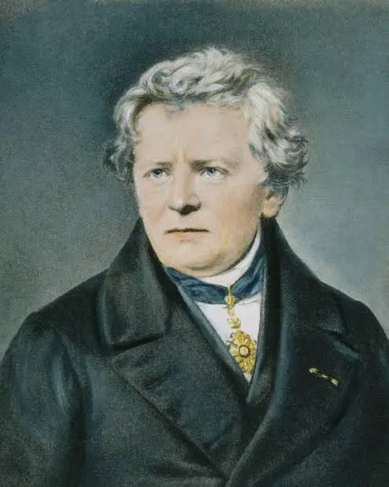
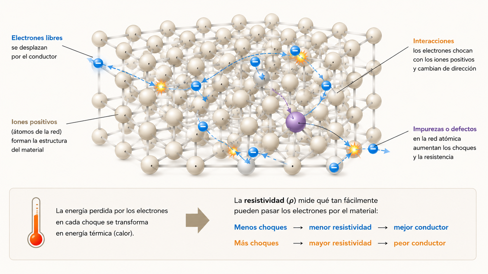
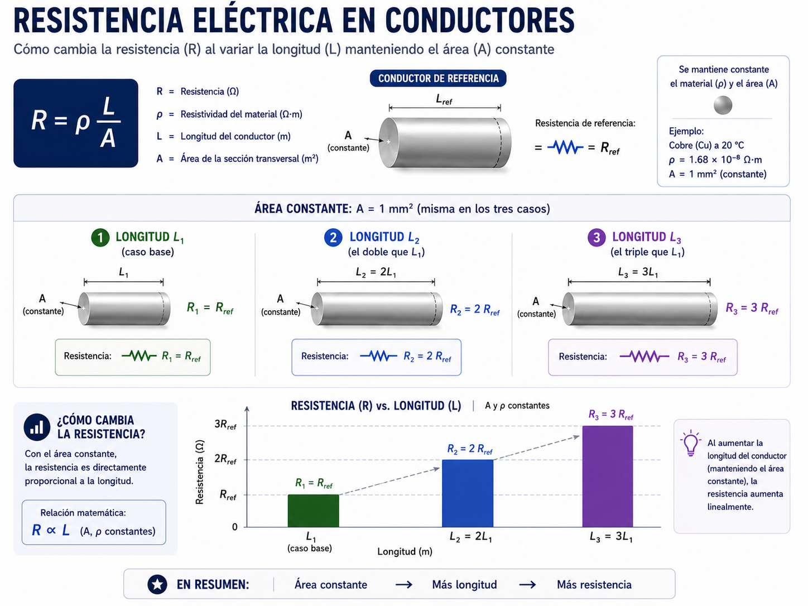
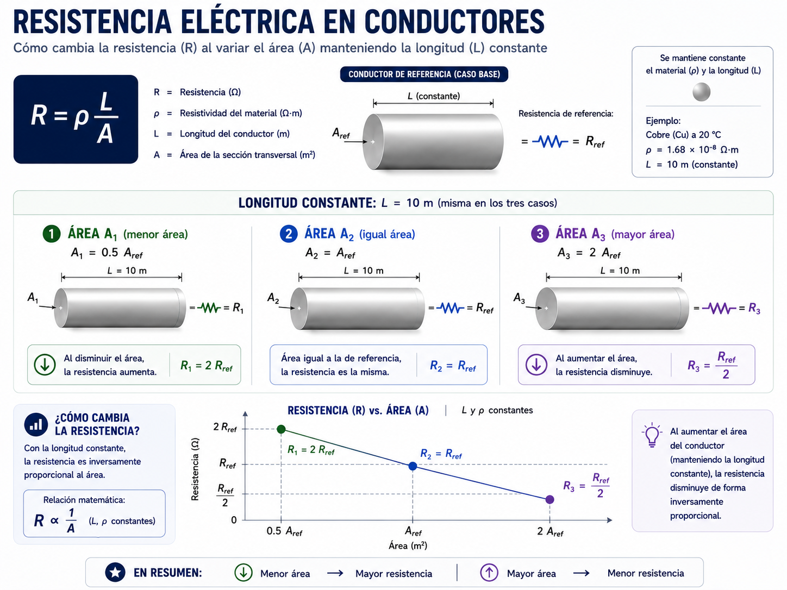
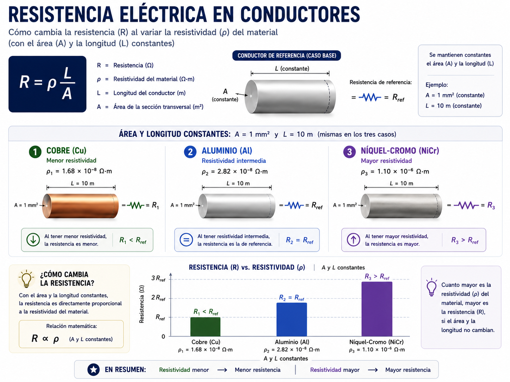
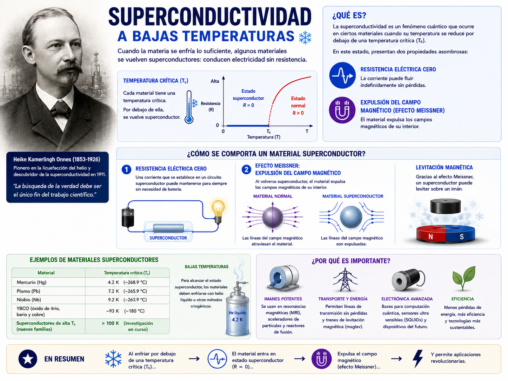

Sistemas Multi Física - Profesor Javier Pereyra
Resistencia eléctrica: longitud, sección y material
Apunte de estudio para comprender por qué algunos conductores se oponen más que otros al movimiento de las cargas eléctricas.

1 Idea inicial
Cuando las cargas se mueven por un conductor no avanzan libremente como si estuvieran en el vacío. En su camino interactúan con la estructura interna del material: la red de partículas que forma el conductor.
La resistencia eléctrica representa la oposición que presenta un conductor al movimiento ordenado de las cargas. No todos los cables ofrecen la misma dificultad: importa de qué material están hechos, qué longitud tienen y qué tan grande es su área transversal.
Una analogía útil es imaginar estudiantes caminando por un pasillo. Si el pasillo es largo, estrecho o está lleno de obstáculos, el avance se vuelve más difícil. En un conductor ocurre algo parecido: la longitud, el grosor y el material influyen en la resistencia.
2 Relación con la clase anterior
En la clase anterior estudiamos la corriente eléctrica como una medida del flujo de cargas. La corriente indica cuánta carga atraviesa una sección del conductor por unidad de tiempo:
\(I\) representa la corriente eléctrica.
\(q\) representa la carga eléctrica que atraviesa una sección.
\(t\) representa el intervalo de tiempo considerado.
En esta clase no calcularemos la corriente usando tensión. Solo estudiaremos qué características del conductor hacen que el paso de cargas sea más fácil o más difícil.
3 Modelo microscópico de la resistencia
En un metal existen electrones libres que pueden desplazarse por la red metálica. Sin embargo, al moverse interactúan con la red de iones positivos del material.
No se trata exactamente de choques simples como pelotitas rígidas. Es una interacción microscópica con la estructura del material. Esas interacciones dificultan el movimiento ordenado de las cargas y parte de la energía asociada al movimiento eléctrico puede transformarse en energía térmica.
Por eso algunos conductores o resistencias se calientan cuando circula corriente: el movimiento de las cargas no ocurre en un camino perfectamente libre.

4 Fórmula principal de la resistencia de un conductor
Para un conductor uniforme, la resistencia eléctrica puede estudiarse a partir de una relación entre el material y la geometría del conductor:
\(R\): resistencia eléctrica del conductor.
\(\rho\): resistividad del material.
\(L\): longitud del conductor.
\(A\): área transversal del conductor.
5 Sistema de unidades
| Magnitud | Símbolo | Unidad SI | Significado |
|---|---|---|---|
| Resistencia eléctrica | \(R\) | ohmio \(\Omega\) | Oposición total del conductor al paso de las cargas. |
| Resistividad | \(\rho\) | ohm metro \(\Omega\cdot m\) | Oposición propia del material. |
| Longitud | \(L\) | metro m | Distancia que recorren las cargas en el conductor. |
| Área transversal | \(A\) | metro cuadrado \(m^2\) | Superficie disponible para el paso de cargas. |
6 Variable 1: longitud del conductor
Si el conductor es más largo, las cargas deben atravesar más material. Por eso hay más oposición al movimiento y la resistencia aumenta.
Volviendo a la analogía: un pasillo largo ofrece más recorrido que uno corto. Aunque ambos tengan el mismo ancho, caminar por el más largo requiere atravesar más distancia.

7 Variable 2: área transversal
El área transversal representa el "grosor efectivo" del conductor. Si el área es mayor, hay más espacio disponible para el paso de cargas. Entonces la resistencia disminuye.
Es más fácil que muchas personas atraviesen una puerta ancha que una puerta angosta. En un conductor, una sección mayor ofrece más caminos posibles para las cargas.

8 Variable 3: resistividad del material
La resistividad \(\rho\) mide cuánto se opone un material al movimiento de las cargas. No todos los materiales conducen igual, incluso si tienen la misma forma y tamaño.
La idea complementaria es la conductividad eléctrica, representada con la letra griega \(\sigma\). Mientras la resistividad indica cuánta oposición presenta un material, la conductividad indica qué tan fácilmente permite el movimiento de las cargas.
\(\sigma\): conductividad eléctrica del material.
\(\rho\): resistividad eléctrica del material.
La unidad de conductividad es el siemens por metro, \(S/m\).
Si un material tiene resistividad baja, su conductividad es alta: deja pasar las cargas con más facilidad. Si tiene resistividad alta, su conductividad es baja: se comporta más como aislante.
| Material | Tipo | Resistividad relativa | Conductividad relativa | Uso típico |
|---|---|---|---|---|
| Cobre | Conductor | Baja | Alta | Cables eléctricos. |
| Aluminio | Conductor | Baja | Alta | Líneas eléctricas. |
| Nicrom | Resistivo | Alta | Baja | Resistencias calefactoras. |
| Plástico | Aislante | Muy alta | Muy baja | Recubrimiento de cables. |

9 Comparación general de variables
| Variable | Si aumenta... | ¿Qué ocurre con \(R\)? | Explicación |
|---|---|---|---|
| Longitud \(L\) | Aumenta | \(R\) aumenta | Las cargas atraviesan más material. |
| Área transversal \(A\) | Aumenta | \(R\) disminuye | Hay más espacio para el paso de cargas. |
| Resistividad \(\rho\) | Aumenta | \(R\) aumenta | El material se opone más al movimiento de cargas. |
10 Ejemplo resuelto 1: comparación por longitud
Problema: dos cables están hechos del mismo material y tienen la misma área transversal. El cable A mide \(1\,m\) y el cable B mide \(3\,m\). ¿Cuál tiene mayor resistencia?
Análisis: el material y el área son iguales. La única variable que cambia es la longitud.
Relación: si \(L\) aumenta, \(R\) aumenta.
Respuesta: el cable B tiene mayor resistencia porque su longitud es mayor.
Interpretación: si el material y el área son iguales, la resistencia aumenta proporcionalmente con la longitud.
11 Ejemplo resuelto 2: comparación por área
Problema: dos conductores tienen el mismo material y la misma longitud. Uno tiene área transversal pequeña y el otro tiene área transversal mayor. ¿Cuál tiene menor resistencia?
Análisis: el material y la longitud son iguales. La variable que cambia es el área transversal.
Relación: si \(A\) aumenta, \(R\) disminuye.
Respuesta: el conductor de mayor área transversal tiene menor resistencia.
Interpretación: una sección mayor ofrece más espacio para el movimiento de las cargas.
12 Ejemplo resuelto 3: cálculo simple con fórmula
Problema: un conductor tiene resistividad \(\rho = 2 \times 10^{-6}\,\Omega\cdot m\), longitud \(L=4\,m\) y área transversal \(A=1 \times 10^{-6}\,m^2\). Calcular su resistencia.
Datos:
\[ \rho = 2 \times 10^{-6}\,\Omega\cdot m \] \[ L=4\,m \] \[ A=1 \times 10^{-6}\,m^2 \]Fórmula:
\[ R=\rho \frac{L}{A} \]Reemplazo:
\[ R = \left(2 \times 10^{-6}\right)\frac{4}{1 \times 10^{-6}} \]Resultado:
\[ R=8\,\Omega \]Interpretación: el conductor presenta una resistencia de \(8\,\Omega\). Si el área transversal fuera mayor, la resistencia disminuiría.
13 Digresión: cuando la resistencia desaparece
En muchos metales, la resistencia cambia con la temperatura. Al bajar la temperatura, la vibración de la red atómica disminuye y puede reducirse la oposición al movimiento de las cargas.
Pero en ciertos materiales ocurre algo mucho más sorprendente: por debajo de una temperatura crítica, la resistencia eléctrica cae abruptamente a cero. Este fenómeno se llama superconductividad.
Heike Kamerlingh Onnes estudió materiales a temperaturas extremadamente bajas. En 1911 observó que la resistencia eléctrica del mercurio desaparecía al enfriarlo cerca de \(4{,}2\,K\). Este fue el descubrimiento de la superconductividad.
En un superconductor ideal, una corriente podría mantenerse sin pérdida de energía por resistencia. La superconductividad tiene aplicaciones en imanes potentes, resonancia magnética, aceleradores de partículas y trenes de levitación magnética.

14 Actividades
En estas actividades vamos a usar la fórmula de resistencia del conductor y sus despejes. La clave es identificar primero qué dato falta y recién después reemplazar números.
Conductividad: la conductividad eléctrica se simboliza con \(\sigma\) y mide qué tan buen conductor es un material. Se relaciona con la resistividad mediante:
\[ \sigma=\frac{1}{\rho} \]Si \(\rho\) es alta, \(\sigma\) es baja. Si \(\rho\) es baja, \(\sigma\) es alta.
- Explica con tus palabras qué significa que un conductor tenga resistencia eléctrica. No uses fórmula todavía: usá la idea microscópica de interacción con el material.
- Dos cables son del mismo material y tienen la misma área. Uno mide \(2\,m\) y otro \(6\,m\). ¿Cuál tiene mayor resistencia? Justifica indicando qué variable cambia y cuáles quedan constantes.
- Dos cables tienen la misma longitud y material. Uno es más grueso que el otro. ¿Cuál tiene menor resistencia? Justifica usando la relación entre \(A\) y \(R\).
- Averiguar la resistencia: un conductor tiene \(\rho = 3 \times 10^{-6}\,\Omega\cdot m\), \(L=2\,m\) y \(A=1 \times 10^{-6}\,m^2\). Calcula \(R\).
- Averiguar la longitud: un cable tiene \(R=8\,\Omega\), \(A=2 \times 10^{-6}\,m^2\) y \(\rho = 4 \times 10^{-6}\,\Omega\cdot m\). Despeja \(L\) y calcula la longitud del conductor.
- Averiguar el área: un conductor tiene \(R=6\,\Omega\), \(L=3\,m\) y \(\rho = 2 \times 10^{-6}\,\Omega\cdot m\). Despeja \(A\) y calcula el área transversal.
- Averiguar la resistividad: una muestra de material forma un conductor de \(R=5\,\Omega\), \(L=10\,m\) y \(A=2 \times 10^{-6}\,m^2\). Despeja \(\rho\) y determina su resistividad.
- Averiguar la conductividad: un material tiene resistividad \(\rho=2 \times 10^{-8}\,\Omega\cdot m\). Calcula su conductividad usando \(\sigma=\frac{1}{\rho}\). Indica la unidad \(S/m\), llamada siemens por metro.
- Otra práctica de resistencia: un conductor tiene \(\rho = 1{,}5 \times 10^{-6}\,\Omega\cdot m\), \(L=4\,m\) y \(A=3 \times 10^{-6}\,m^2\). Calcula \(R\) e interpreta si el resultado indica mucha o poca oposición al paso de cargas.
- Completa la tabla usando \(R=\rho \frac{L}{A}\), el despeje necesario o \(\sigma=\frac{1}{\rho}\).
\(\rho\) \(L\) \(A\) \(R\) \(\sigma\) Dato que se busca \(2 \times 10^{-6}\,\Omega\cdot m\) \(5\,m\) \(1 \times 10^{-6}\,m^2\) _____ No se pide \(R\) \(3 \times 10^{-6}\,\Omega\cdot m\) _____ \(2 \times 10^{-6}\,m^2\) \(9\,\Omega\) No se pide \(L\) _____ \(4\,m\) \(2 \times 10^{-6}\,m^2\) \(4\,\Omega\) No se pide \(\rho\) \(5 \times 10^{-7}\,\Omega\cdot m\) No se pide No se pide No se pide _____ \(\sigma\) - Ordena de menor a mayor resistencia tres conductores del mismo material y área: A mide \(1\,m\), B mide \(3\,m\), C mide \(5\,m\). Después explica cómo cambiaría el orden si todos tuvieran la misma longitud, pero áreas diferentes.
- Un estudiante despejó así: \(A=\frac{R}{\rho\cdot L}\). ¿Está bien? Si no está bien, corrige el despeje y explica el error.
- Actividad integradora: diseña un cable con \(R=12\,\Omega\). Elegí valores posibles para \(\rho\) y \(A\), despejá \(L\), calculá el resultado e interpretá si el cable sería largo o corto para un uso cotidiano.
- ¿Qué tiene de sorprendente la superconductividad respecto de la resistencia eléctrica? Respondé relacionando material, temperatura y resistencia.
15 Preguntas para pensar
- ¿Por qué un cable largo puede tener más resistencia que uno corto?
- ¿Por qué un cable grueso suele tener menor resistencia que uno fino?
- ¿Por qué no alcanza con decir "este material conduce" sin analizar su resistividad?
- ¿Qué diferencia hay entre la resistencia de un objeto y la resistividad de un material?
- ¿Por qué la superconductividad es un fenómeno tan llamativo?